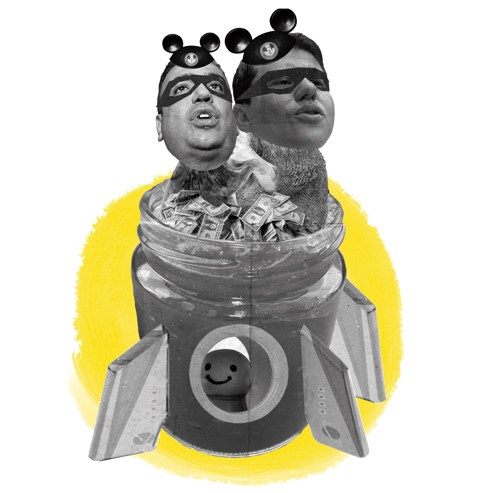

Introducción

Colombia es un sancocho, un cruel putrefacto, vil y desalmado menjurje cocido a las ígneas llamas del fuego de la idiosincracia patria, compuesta por esa execrable triada de la corrupción, la indolencia y la ignorancia que arropan lo ancho y lo largo de nuestro país.
Basta con ojear rápidamente cualquier diario y encontrarse perlas como magistrados de la corte suprema, intachables e impolutos impartidores de justicia, envueltos en una enmarañada y grotesca red de corrupción, pre-candidatos presidenciales investigados por la justicia, la salud cada día en condiciones más penosas, y para colmo de males, hay quienes apelan al amor a la patria en búsqueda de sus maquiavélicas intenciones; todo un concepto de estado y patria fallida.
La ignominiosa sanguaza que rebosa el fetido caldero llamado Colombia nos hisopea a todos sin importar el credo, la raza o el sexo. En nuestras regiones se habla igualitariamente de corrupción, claro, cada una de nuestras regiones le imprime sus matices de acuerdo a nuestra querida idiosincracia, sea cual sea esta: políticos paisas dicharacheros y simpáticos, de la capital con ese clásico estilo que caracteriza al dando bogotano muy sobrio y acostumbrado al jet-set, más al este en nuestro desangrado Pacífico está el burócrata disfrazado de representante de minorías, y así finalmente llegamos a la costa Caribe.
La cuenca del Caribe colombiano ha estado por un largo tiempo bajo el ojo de la lupa gracias a su entramado de corruptela política, desde el golfo de Urabá hasta la península de la Guajira no hay recoveco de este territorio que sea ajeno a la problemática en cuestión. Razones? Muchas, desde lo atractivo de la región para términos de inversión extranjera y nacional, abandono del estado en ciertos puntos claves y el poderío de diferentes clanes familiares que nunca han soltado el busto amamantador de la subvención estatal y la torta burocrática.
Si los medios nacionales han acuñado el vocablo de 'mermelada' para denominar las asignaciones presupuestales que van desde el Gobierno hacia los alcaldes y gobernadores por pedido de legisladores de cada territorio en cuestión, supuestamente para realizar inversiones necesarias en cada lugar, pero que realmente no responden a los Planes de Desarrollo.
Hoy propongo ante todos los que me leen, que acuñemos el termino 'sancocho' para referirnos a esos grotescos pagos de cuotas o favores políticos en forma de dineros público (a la final el termino se acuña para nuestra región). Usemos ese tan arraigado plato de fusión culinaria, que mezcla cocidos típicos españoles como 'la olla podrida' (imagínate tú) con los ajiacos que en antaño representaban la mas excelsa de las técnicas ancestrales de nuestros colonizados indígenas. A diferencia de la mermelada, el sancocho si tiene un principio comunal, se cocina y acto posterior se distribuye para finalmente ser ferozmente engullido por los comensales.
Pero para no seguir acibarando los ánimos con estos funestas de la complicada actualidad nacional, hoy les tengo un bestiario, constituido de pies a cabeza por dos elementos que como la 'mermelada', perdón el 'sancocho' son tan arraigados a nuestro colorido pueblo caribe; la culinaria y el vallenato.
La escogencia de estos temas tiene como fin exponer la verdadera naturaleza de la región Caribe, la glotonería (al menos que estemos hablando de La Guajira porque ahí si nada que inventar), la bebida (de parrandas y reuniones entre cuarteles políticos de la región) y la música, tres elementos que coexisten en una cuasi-perfecta armonía de la cuál no se ha escrito lo suficiente hasta el día de hoy, y sobre todo, a ver si de una vez por todas nos regalamos un momento para reírnos entre tanto caos que nos ahoga día a día en este cruel y abúlico país.